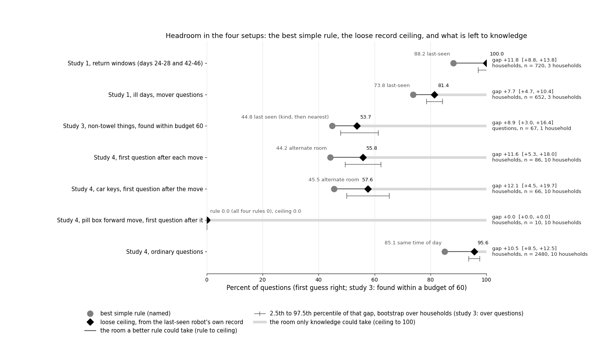
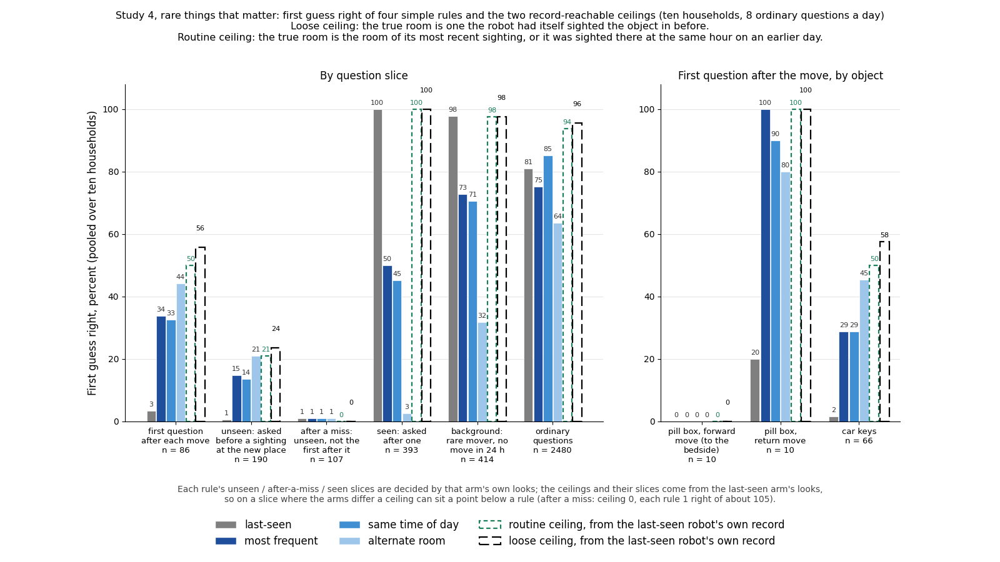
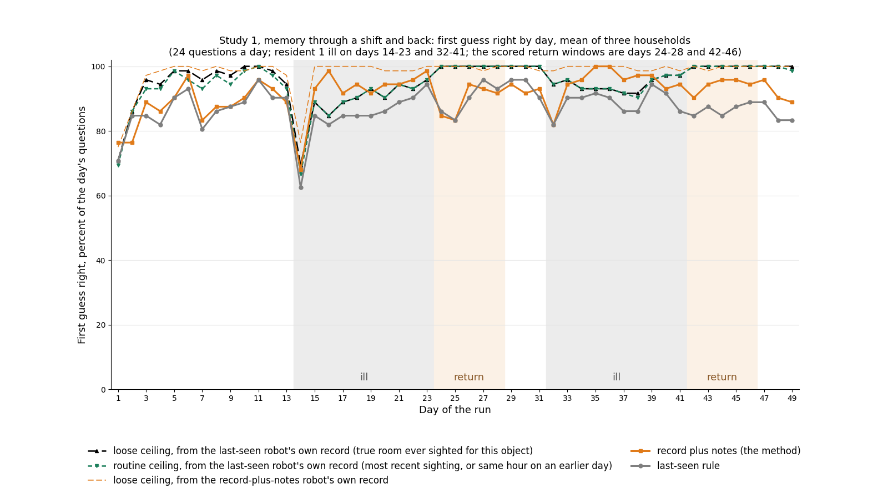
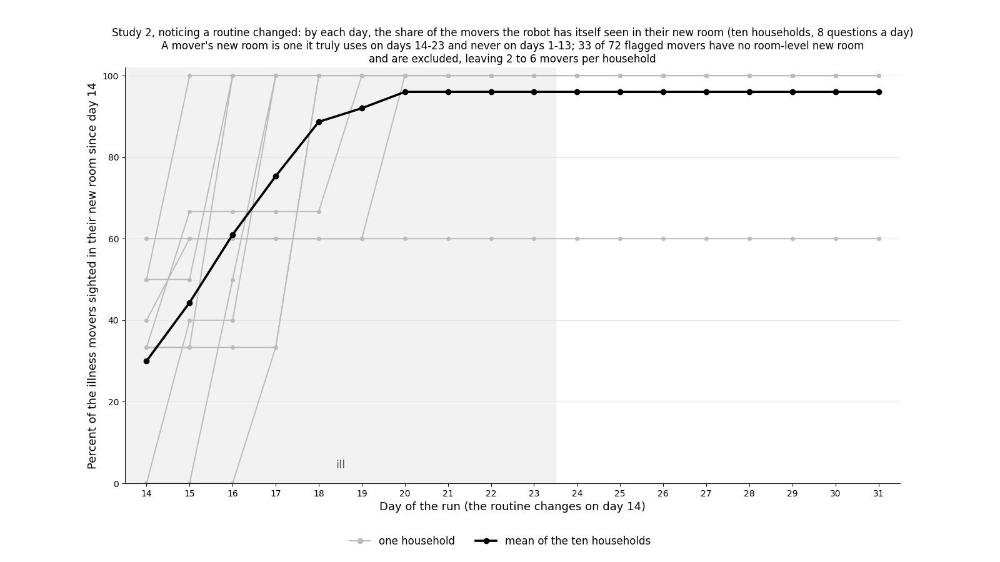
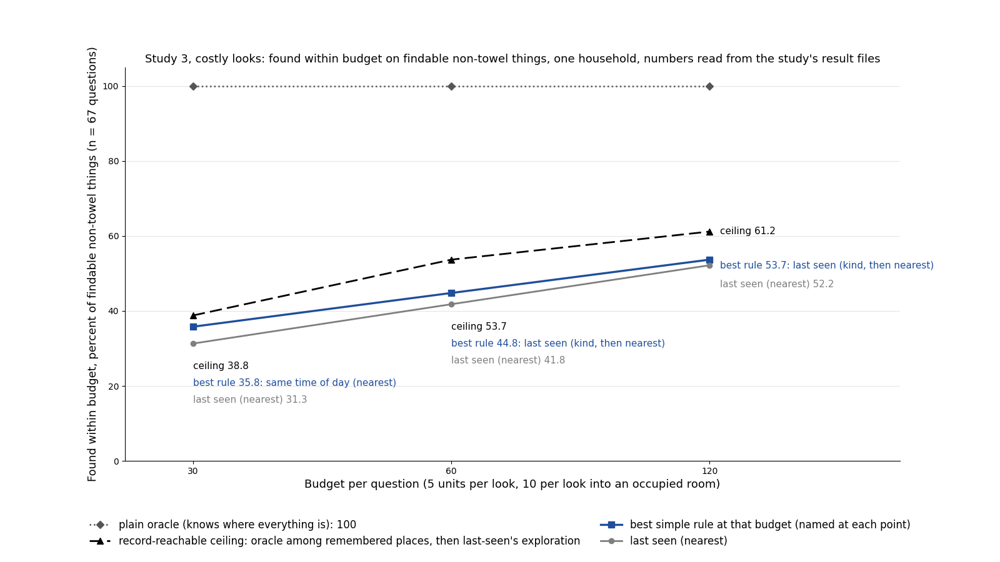

<title>Screening Results</title>
<style>
:root{--bg:#f7f6f2;--card:#ffffff;--ink:#1d1f22;--soft:#5d6168;--line:#dcdad3;--accent:#9a3b12;--keep:#1f6f3f;--drop:#8a1c1c;--mono:ui-monospace,SFMono-Regular,Menlo,monospace}
@media (prefers-color-scheme: dark){:root:not([data-theme="light"]){--bg:#15171a;--card:#1e2126;--ink:#e8e6e1;--soft:#a3a7ad;--line:#33373d;--accent:#e0794a;--keep:#6fcf8f;--drop:#f08a8a;color-scheme:dark}}
:root[data-theme="dark"]{--bg:#15171a;--card:#1e2126;--ink:#e8e6e1;--soft:#a3a7ad;--line:#33373d;--accent:#e0794a;--keep:#6fcf8f;--drop:#f08a8a;color-scheme:dark}
body{background:var(--bg);color:var(--ink);font:15px/1.5 system-ui,-apple-system,Segoe UI,sans-serif;margin:0;padding-block:24px;padding-inline:16px}
main{max-width:980px;margin:0 auto;display:grid;gap:18px}
h1{font-size:26px;margin:0 0 4px;text-wrap:balance}
h2{font-size:18px;margin:0 0 10px;text-wrap:balance}
h3{font-size:15px;margin:14px 0 6px}
.box{background:var(--card);border:1px solid var(--line);border-radius:8px;padding:16px 18px}
.meta{color:var(--soft);font-size:13px}
table{border-collapse:collapse;width:100%;font-size:13.5px;margin:6px 0}
th,td{text-align:left;padding:5px 8px;border-bottom:1px solid var(--line);vertical-align:top}
th{font-weight:600;color:var(--soft);font-size:12px;letter-spacing:.03em;text-transform:uppercase}
td.n{font-family:var(--mono);font-variant-numeric:tabular-nums;white-space:nowrap}
.scroll{overflow-x:auto}
figure{margin:12px 0}figure img{width:100%;max-width:100%;height:auto;border:1px solid var(--line);border-radius:6px;background:#fff}figcaption{font-size:13px;color:var(--soft);margin-top:4px;max-width:80ch}
.state{font-weight:600}.keep{color:var(--keep)}.drop{color:var(--drop)}.run{color:var(--accent)}
p{margin:6px 0;max-width:72ch}
ul,ol{margin:6px 0;padding-left:22px;max-width:72ch}
code{font-family:var(--mono);font-size:12.5px}
dt{font-weight:600;margin-top:6px}dd{margin:0 0 4px 0;color:var(--soft)}
</style>
<main>
<header>
  <h1>Screening results</h1>
  <p class="meta">Last updated 2 October 2026, 09:29 Pacific. Four small studies in a simulated home where a robot is asked several times a day where a named thing is. Each study is kept only if some method beats the best simple rule by 10 percentage points of first-guess accuracy, with that gap above two standard errors. The brief (the written instructions for these studies) is a separate document; this page stands on its own. Every count below was checked by a second agent that saw only the raw files and the counting rule, not these numbers ("blind recount").</p>
</header>

<section class="box">
  <h2>Where each study stands</h2>
  <table>
    <tr><th>Study</th><th>State</th><th>Reason</th></tr>
    <tr><td>1. Memory through a shift and back</td><td class="state drop">dropped</td><td>On three households simulated with a resident ill twice in 50 days, the best memory method beats the last-seen rule by 3.6 points of first-guess accuracy, pooled over the five days after each recovery, as the score was fixed before counting. Bar: 10. The blind recount matches.</td></tr>
    <tr><td>2. Noticing a routine changed</td><td class="state drop">dropped</td><td>No rule and no written note detects the change at the false-alarm bar (zero alarms in the first thirteen days, tuned on other households). With eight questions a day, hence eight looks a day, the change is barely visible in what the robot sees. The blind recount matches.</td></tr>
    <tr><td>3. Costly looks</td><td class="state drop">dropped by design</td><td>A ceiling policy that chooses perfectly among the places the robot has ever seen the thing, and otherwise searches like the rule, gains only 8.9 points over the best rule on non-towel things at the middle budget; a 10-point gap on all things would need 23 there. No method that chooses from this memory and searches like the rule can clear it, so no model was run. A re-run of the computation by a second agent matches.</td></tr>
    <tr><td>4. Rare things that matter</td><td class="state run">built; model runs blocked by the GPU</td><td>A new scenario with a pill box and car keys that move rarely, for a reason the robot could in principle see, is built and checked. The best simple rule (one that guesses the thing's other usual room) reaches 44.2% on the first question after each move, so any memory method must reach 54.2% there. The model runs were ready to launch when the GPU failed.</td></tr>
  </table>
</section>

<section class="box">
  <h2>Headroom: how badly the simple rules do, and how much of the gap the robot's own record could close</h2>
  <p>This is the measure the studies should be judged by, and it needs no language model. For every question, three levels: the best simple rule; the <b>record ceiling</b>, which is what a method would score if it used the robot's own past sightings perfectly (the true room is a room the robot has itself seen the thing in before; a "routine" variant requires it to be the last-seen room or the room at this time of day on an earlier day); and the truth (100%). The band between the rule and the record ceiling can be closed by a better rule or a frequency table. The band between the record ceiling and the truth can only be closed by knowledge the record does not hold: what people do, why things move. That second band is where a language model could matter and a frequency method cannot, and it is what the model runs must be scored against.</p>
  <figure><figcaption>All setups on one axis. Grey circle: the best simple rule, named. Black diamond: the loose record ceiling, from the last-seen robot's own sightings. Thin line: the room a better rule could take. Light grey: the room only knowledge could take. Bracket: 2.5th to 97.5th percentile of the rule-to-ceiling gap over households (study 3: over questions, one household). Study 1 return windows +11.8 [8.8, 13.8]; study 1 ill-day movers +7.7 [4.7, 10.4]; study 3 +8.9 [3.0, 16.4]; study 4 first question after a move +11.6 [5.3, 18.0]; study 4 ordinary questions +10.5 [8.5, 12.5].</figcaption></figure>
  <div class="scroll"><table>
    <tr><th>Setup and slice</th><th>Best simple rule</th><th>Record ceiling (loose / routine)</th><th>Room a better rule could take</th><th>Room only knowledge could take</th><th>n</th></tr>
    <tr><td>1. Five days after each return to normal</td><td class="n">88% (last-seen)</td><td class="n">100 / 100</td><td class="n">12</td><td class="n">0</td><td class="n">720, 3 homes</td></tr>
    <tr><td>1. The ill days, objects that move with the illness</td><td class="n">74% (last-seen)</td><td class="n">81 / 81</td><td class="n">8</td><td class="n">19</td><td class="n">652, 3 homes</td></tr>
    <tr><td>3. Costly looks, non-towel things, budget 60</td><td class="n">45% (last-seen, same kind first)</td><td class="n">54 (ceiling that searches like the rule)</td><td class="n">9</td><td class="n">46 (things at places the robot never saw them; a search question, not a knowledge one)</td><td class="n">67, 1 home</td></tr>
    <tr><td>4. First question after each rare move</td><td class="n">44% (alternate room)</td><td class="n">56 / 50</td><td class="n">12</td><td class="n">44</td><td class="n">86 moves, 10 homes</td></tr>
    <tr><td>4. Car keys, first question after the move</td><td class="n">45% (alternate room)</td><td class="n">58 / 50</td><td class="n">12</td><td class="n">42</td><td class="n">66</td></tr>
    <tr><td>4. Pill box, forward move to the bedside</td><td class="n">0% (every rule)</td><td class="n">0 / 0</td><td class="n">0</td><td class="n">100</td><td class="n">10</td></tr>
    <tr><td>4. Ordinary questions</td><td class="n">85% (same time of day)</td><td class="n">96 / 94</td><td class="n">11</td><td class="n">4</td><td class="n">2,480</td></tr>
  </table></div>
  <p><b>What this says about the goal</b> (a setup where simple methods are unacceptably poor and a language model could bring a large gain). Study 1's return windows have 12 points of room, all of it reachable from the record, so a frequency method could take it; nothing there needs a model. Study 2's change is barely in the record at all for the first three days (the chart below), so no detector of any kind has much to work with. Study 3's big band is a search problem (the thing is where the robot has never seen it). <b>Study 4 is the setup that fits:</b> on the first question after a rare move the best rule is 44%, the record is exhausted at 56%, and 44 points of the gap can only be taken by knowing why things move: the pill box's first move to the bedside has a record ceiling of 0 and a truth of 100. Whether a language model takes any of that band is exactly what the blocked model runs measure, and Opus should be run on it before Qwen, as the brief says. The night's "drop" verdicts for studies 1 and 2 were made from Qwen's numbers against the bar; read as headroom, study 1 has room but none that needs a model, study 2 has little room, study 3 has room but of the wrong kind, and study 4 has the room this project wants.</p>
  <figure><figcaption>Study 4. Left: by question slice. Right: the first question after a move, by object. Bars are the four simple rules; dashed outlines are the two record ceilings. On the first question after a move the rules reach 44% at best, the record ceiling is 56%, and the truth is 100%.</figcaption></figure>
  <figure><figcaption>Study 1. First guess right by day, mean of three households. In the return windows the record ceiling is 100% and last-seen is 84 to 90%; during the ill days the ceiling itself drops to about 81% on the moving objects, because the robot has not yet seen them at their new places. The record-plus-notes method (orange) sits above last-seen's record ceiling on 14 days because it opens different rooms and so has a different record.</figcaption></figure>
  <figure><figcaption>Study 2. By each day, the share of the objects moved by the illness that the robot has itself seen in their new room (grey: one household each; black: mean). On day 14 it is 30%, by day 17 75%: for the first three days the change is mostly not in the record, which bounds any detector.</figcaption></figure>
  <figure><figcaption>Study 3. Non-towel things found within budget, one household. The ceiling that chooses perfectly among remembered places but searches like the rule is 3 to 9 points above the best rule; the plain oracle is at 100%. The remaining band is a search question.</figcaption></figure>
  <p class="meta">Numbers and the script: <code>coordination/headroom/HEADROOM.md</code>, <code>headroom.py</code>. Ceilings are computed from the last-seen cell's own looks so they do not depend on a model's choices. <b>Checked:</b> a separate agent that saw only the charts and the number tables confirmed every number on the charts against the tables (one reading of the record-plus-notes line was re-verified: days 24 and 25 pull the window mean to 89.4) and asked for what is now here: one summary chart on a common axis with an interval on every gap, the two ceilings in two colours, the ceiling labelled as coming from the last-seen robot's record, the record-plus-notes method's own ceiling drawn so it never sits above an unlabelled ceiling, and the return windows marked on the study 1 chart.</p>
</section>

<section class="box">
  <h2>What changed since the last update</h2>
  <ul>
    <li>09:19: a Headroom section added at the top, after Oliver's direction: the measure is the room between the simple rules, the record ceiling and the truth, not whether Qwen cleared a bar. Five charts, including one summary chart on a common axis with intervals, after a cold check of the charts at 09:29.</li>
    <li>02:07: the page was rewritten after a cold read (a reader with no context listed 71 places that needed a definition or a comparison). No numbers changed.</li>
    <li>02:05: study 3 dropped by design after two checks (one for information the model should not see, one of the study design); study 4 built, its rule baselines computed and its pass/fail rule written down before any run; the GPU then failed (the driver reports no device), so no language model ran tonight. Earlier clock times on this page were wrong by hours and were corrected from file times; the night so far spans 00:50 to 02:07.</li>
    <li>01:23: study 2 dropped on counts from stored sightings and notes; study 4 found to need a change to the program that generates the household's month; study 3's benchmark changes in progress.</li>
    <li>01:08: study 1 decided from an earlier simulation already on disk, with no new model call.</li>
  </ul>
  <p>Opus (the larger language model, run as separate agents, never through the paid interface) has not been run in any study. The brief allows it only while a file reporting the plan's usage quota exists and is under an hour old; creating that file needs a setting only Oliver can add. By the brief's rule, unknown usage means no Opus.</p>
</section>

<section class="box">
  <h2>Study 1: memory through a shift and back</h2>
  <p><b>Question.</b> When a resident's routine changes for ten days and then changes back, twice in a month, does a written memory find things better than the last-seen rule in the five days after each return to normal?</p>
  <p><b>What was changed in the simulator.</b> Nothing new tonight. An earlier 50-day simulation has resident 1 ill on days 14 to 23 and 32 to 41, so days 24 to 28 and 42 to 46 are the two return windows. Three households, 24 questions a day, 120 questions per window per household. Perfect perception: a thing is seen if the robot looks into its room.</p>
  <p><b>Methods.</b> One name each, used in the tables too: <i>last-seen</i> (look first where the thing was last seen; no model); <i>record plus notes</i> (the model gets every sighting the robot made, with place, day and time, and the notes it wrote about the routine each night); <i>record plus notes, told</i> (the same, plus a note the night before each illness saying who will be ill); <i>rule list</i> (a method that keeps and revises a list of rules about where things go, after a published design called ACE; a bug in its revision step was fixed before this count); <i>claim store</i> (a plain list of claims about where things are, revised nightly). The model in every memory method is Qwen3.8-27B, run locally.</p>
  <p><b>What the results mean.</b> After the first return no method beats last-seen; record plus notes ties it. After the second return, record plus notes leads last-seen by 7.5 points on all questions and by 12.4 on the objects that had moved in the first illness, with the same sign in all three homes; those objects move again in the second illness, so a memory that kept the first illness's sightings knows where they go. Pooled over both windows, as the score was fixed beforehand, the lead is 3.6 points, under the bar of 10, so the study is dropped. Running the same model method twice changes its score by about 2 points on ordinary days and 2.5 to 6 around a routine change, so a 3.6-point gap is also within that noise. The only place a 10-point gap lives is the second return on moved objects, and that slice was chosen after seeing it, so it is flagged rather than kept. The recency-weighted last-seen rule the brief names was not computed; it is a stronger version of last-seen, so it could only narrow the gap.</p>
  <div class="scroll"><table>
    <tr><th>Method</th><th>Days 24 to 28</th><th>Days 42 to 46</th><th>Pooled</th><th>Pooled, difference from last-seen (points)</th><th>2 SE (3 homes)</th></tr>
    <tr><td>last-seen</td><td class="n">89.7%</td><td class="n">86.7%</td><td class="n">88.2%</td><td class="n">0</td><td class="n"></td></tr>
    <tr><td>record plus notes</td><td class="n">89.4%</td><td class="n">94.2%</td><td class="n">91.8%</td><td class="n">+3.6</td><td class="n">1.5</td></tr>
    <tr><td>record plus notes, told</td><td class="n">86.9%</td><td class="n">92.2%</td><td class="n">89.6%</td><td class="n">+1.4</td><td class="n">2.4</td></tr>
    <tr><td>rule list (ACE)</td><td class="n">76.7%</td><td class="n">85.3%</td><td class="n">81.0%</td><td class="n">-7.2</td><td class="n">1.4</td></tr>
    <tr><td>claim store</td><td class="n">68.9%</td><td class="n">78.9%</td><td class="n">73.9%</td><td class="n">-14.3</td><td class="n">2.0</td></tr>
    <tr><td>last-seen with the first illness's sightings deleted (a check that stale sightings do not hurt it)</td><td class="n">87.8%</td><td class="n">86.7%</td><td class="n">87.2%</td><td class="n">-1.0</td><td class="n">1.5</td></tr>
  </table></div>
  <p class="meta">First guess right, percent of questions. Three households (hh_s2, hh_s32, hh_s48), 720 questions pooled. Differences are paired per household. Opus was not run. Produced by <code>coordination/study1_from_existing_runs.py</code>.</p>
  <h3>On the objects that moved in the first illness, days 42 to 46 only</h3>
  <table>
    <tr><th>Method</th><th>First guess right</th><th>Difference from last-seen (points)</th><th>2 SE</th></tr>
    <tr><td>last-seen</td><td class="n">75.6%</td><td class="n">0</td><td class="n"></td></tr>
    <tr><td>record plus notes</td><td class="n">88.4%</td><td class="n">+12.4</td><td class="n">2.4</td></tr>
    <tr><td>record plus notes, told</td><td class="n">84.9%</td><td class="n">+10.3</td><td class="n">7.4</td></tr>
  </table>
  <p class="meta">40 to 74 questions per household. This is the slice flagged for Oliver, not a kept result.</p>
  <p><b>What the checkers found.</b> The blind recount reproduced every count, share, difference and standard error, and confirmed every method answered the identical 120 questions per window per household. No design review ran because no new run was made.</p>
</section>

<section class="box">
  <h2>Study 2: noticing a routine changed</h2>
  <p><b>Question.</b> Can a method tell from the robot's own sightings that a resident's routine has changed, how many days after, and at how many false alarms a month?</p>
  <p><b>What was changed in the simulator.</b> Nothing: the ten-household month already on disk, with one resident ill from day 14 to 23. Eight questions a day, each answered by looking into up to three rooms, so the robot looks into eight to nineteen rooms a day and records 50 to 300 sightings. For each household, a detector's threshold was the smallest that gave zero false alarms in the first thirteen days of the other nine households; the table counts the alarms the held-out household then raised.</p>
  <p><b>What was predicted, and what happened.</b> Two predictions were written before the counts: that the brief's surprise count would notice the change within a day in eight of ten households, and that a second rule (a thing seen twice in a row in a room it had not used that week) would notice it within two days in seven of ten. Both were wrong: both rules fail. Ordinary days already hold 1.5 to 8 "surprising" sightings (crockery between kitchen and dining room at meals), and the illness changes the room of 5 to 9 objects, of which the robot sees only 3 to 6 move. The nightly notes written by the record-plus-notes method never contain the words ill, sick, unwell or illness in any household; the lines a word search did flag were about single objects ("the previous belief is no longer supported", a plate). So no method, rule or model, detects the change reliably, and the study is dropped as written. The underlying reason is that eight looks a day do not sample the ill resident's rooms often enough for the change to show as a change, and the nightly notes record moves but never a cause.</p>
  <div class="scroll"><table>
    <tr><th>Detector</th><th>Households detecting (days 14 to 23), of 10</th><th>Delay when detected, days</th><th>False-alarm days in days 1 to 13, total over ten households</th><th>Households alarming at the return (days 24 to 31; the return is also a change, so these are not counted as false)</th></tr>
    <tr><td>surprise count, against the last-seen room</td><td class="n">0</td><td class="n"></td><td class="n">1</td><td class="n">1</td></tr>
    <tr><td>surprise count, against the seven-day commonest room</td><td class="n">3</td><td class="n">2, 2, 2</td><td class="n">2</td><td class="n">3</td></tr>
    <tr><td>persistent new place, confirmed by the next sighting</td><td class="n">1</td><td class="n">1</td><td class="n">0</td><td class="n">1</td></tr>
    <tr><td>persistent new place, confirmed on a later day</td><td class="n">0</td><td class="n"></td><td class="n">1</td><td class="n">0</td></tr>
    <tr><td>nightly notes, word match (ill, sick, unwell, resting, changed, no longer, used to, since)</td><td class="n">7 have a matching night</td><td class="n">mean 3.0, sd 2.5</td><td class="n">5 households have matches before day 14</td><td class="n"></td></tr>
  </table></div>
  <p class="meta">A variant tried after seeing the data, not the rule set in advance: calibrating the persistent-place rule on days 8 to 13 only (skipping the first week, when every room is new to the robot) detects 4 of 10 households with delays 0 to 4, and alarms in the first week in 4. With 24 questions a day (the three 50-day households) the seven-day-commonest count detects both illnesses in all three but also alarms at every return.</p>
  <p><b>What the checkers found.</b> The "never says ill" claim was checked with a direct word search of every notes file: no match. The blind recount reproduced every threshold, detection, false-alarm day and return alarm for the two rule detectors.</p>
</section>

<section class="box">
  <h2>Study 3: costly looks</h2>
  <p><b>Question.</b> When every look costs walking distance and looking into a room with a resident in it costs extra, does a method that reasons about where to look next beat the plain rule (last-seen, then the nearest place not yet tried) on things found within a budget?</p>
  <p><b>Where it ran.</b> A separate benchmark built earlier: one home with 164 camera positions grouped into 34 places, pictures stored for every position at 248 question times over a month, walking distances between positions, residents visible in the pictures, and perfect perception (a thing counts as seen when it is in view). The robot here is a Unitree Go2, whose camera is 0.37 m above the floor. Added tonight: a penalty of 10 cost units for looking into an occupied room, 5 units per look plus metres walked, budgets of 30, 60 and 120 units, every rule made to respect the budget under one written rule, two more simple rules (look where the thing was seen at this time of day; last-seen but finishing the current room first), and a chooser driven by a language model whose prompt was checked for information it should not have. A fake model that reads its own prompt and picks the nearest untried place reproduces the plain rule on all 1,240 searches (248 questions from 5 starting positions), so the code around the model is correct.</p>
  <p><b>What the results mean.</b> Before any model call, a ceiling was computed: an oracle that chooses perfectly among the places the robot's own memory has ever seen the thing, and otherwise searches exactly as the rule does. At budget 60 it finds 53.7% of findable non-towel things against the best rule's 44.8%, a gap of 8.9 points. Two towels that never leave the bathroom are 57% of findable questions and every method finds them, so a 10-point gap on all things needs 10 / 0.43 = 23 points on the rest. No method that chooses from this memory and searches like the rule can clear that, so the study is dropped by design and the model was not run. The ceiling does not bound a method that searches better than the rule; only the plain oracle (100%) does.</p>
  <div class="scroll"><table>
    <tr><th>Budget</th><th>Ceiling: oracle among remembered places, then the rule's search</th><th>Best rule on non-towel things</th><th>Gap (points)</th></tr>
    <tr><td class="n">30</td><td class="n">38.8%</td><td class="n">35.8% (same time of day)</td><td class="n">+3.0</td></tr>
    <tr><td class="n">60</td><td class="n">53.7%</td><td class="n">44.8% (last-seen, same kind of thing first, then nearest)</td><td class="n">+8.9</td></tr>
    <tr><td class="n">120</td><td class="n">61.2%</td><td class="n">53.7% (the same)</td><td class="n">+7.5</td></tr>
  </table></div>
  <p class="meta">Found within budget, of the 67 findable non-towel questions; one household.</p>
  <p><b>What the checkers found.</b> The check for information the model should not see found one leak: the budget line let the model infer that a room it had looked into held a resident, taken from the truth rather than from its own picture, and the asked thing is in an occupied room 56% of the time; fixed before any run. The design review's decisive point was the ceiling above. Two facts came out on the way. The five starting positions do not give independent samples: every method walks to the same towel first and the trajectories are identical from then on, so the sample is 248 questions in one household. And 73 of the 93 questions whose thing is in no picture are things at three places (desk, dining table, bathroom shelf) that no picture from the Go2's camera height shows; that belongs to the camera study on the main project page. A second agent re-ran the ceiling computation and every row matched.</p>
</section>

<section class="box">
  <h2>Study 4: rare things that matter</h2>
  <p><b>Question.</b> For things that move rarely but are asked about when they do (medication, keys), does any memory method beat last-seen and most-frequent (look first in the room where the thing has been seen most often) on the questions asked right after a move?</p>
  <p><b>What the existing question sets held.</b> Nothing usable. Of 145 asked-about objects in ten households, 46 never change room, 20 change room 4 to 30 times a month, 71 more than 30 times, and 8 one to three times (mostly the illness movers themselves). Six of 2,480 questions fall within a day of a rare move, so nothing could be measured.</p>
  <p><b>What was built.</b> A new scenario adds a pill box that moves to the ill resident's nightstand on the first sick day and back on the first well day, and car keys that land where the driver first sits after each trip home (6 to 13 trips a month). Reading glasses, which were to move only on non-working days, could not be built because every day in the calendar is a working day. The new question sets reproduce the old ones row for row once the added objects are removed; a consistency check of the generated month passed. Questions about the two objects are asked in the first hour after each move and at random other times.</p>
  <p><b>What the rule baselines showed, and how the plan changed.</b> With 24 questions a day last-seen is 83% on the rare-move questions, not under 40% as predicted, because the robot stumbles on the moved thing within hours. The rest of the study therefore uses 8 questions a day (the load of the earlier runs) and the hard case: the first question after each move, asked minutes after it, before any look. There, over 86 moves in ten households, last-seen is 3.5%, same time of day 32.6%, most-frequent 33.7%, and a rule that guesses the thing's other usual room ("alternate room") 44.2%; alternate room exploits the keys' two or three landing spots and does worse on every other kind of question. A check of the robot's record showed the cause of a move (the driver seen at home, the ill resident seen in bed) is never in it at that first question, so tonight's design tests whether a language-model memory beats a frequency table at guessing from time of day and who owns the thing, not whether it uses a seen cause. The better design, questions asked after the driver was seen at home but before the keys were, needs a change to the month generator and is proposed below. The pass/fail rule for tonight's design was written down before any run: the unit is the move; the bar is 54.2% (alternate room plus 10); a second bar is the same model with its notes hidden, because the object's name (whose keys) already reveals the owner; and the method must not fall below last-seen on the other questions by more than the noise of rerunning it. The runs were ready when the GPU failed. A check of the prompts the memory method sees found only the map, the two residents' names and the clock beyond its own looks: no calendar, illness or schedule words.</p>
  <table>
    <tr><th>Existing question sets: questions within a day of any move (1,046)</th><th>First guess right</th><th>Difference from last-seen (points)</th><th>2 SE (10 homes)</th></tr>
    <tr><td>last-seen</td><td class="n">62.7%</td><td class="n">0</td><td class="n"></td></tr>
    <tr><td>record plus notes</td><td class="n">68.5%</td><td class="n">+6.3</td><td class="n">6.7</td></tr>
    <tr><td>claim store</td><td class="n">53.6%</td><td class="n">-8.3</td><td class="n">10.2</td></tr>
    <tr><td>small working memory plus archive (a method that keeps a short memory in the prompt and the rest in a store it can search, after a published design called MemGPT)</td><td class="n">47.6%</td><td class="n">-16.2</td><td class="n">12.7</td></tr>
    <tr><td>notes hidden (the model sees the question and the rooms but no record)</td><td class="n">12.0%</td><td class="n">-47.0</td><td class="n">13.8</td></tr>
  </table>
  <p class="meta">Not the study's question, but the one slice of the existing question sets where methods differ: the one method above last-seen (+6.3) is within 2 SE (6.7) of zero.</p>
</section>

<section class="box">
  <h2>Ideas from the idea explorer</h2>
  <p>None yet. The idea explorer (a separate agent that proposes follow-ups from finished reports) has not been started.</p>
</section>

<section class="box">
  <h2>Open questions for Oliver</h2>
  <ol>
    <li>The GPU is in a fault state: the driver reports no device, nothing holds it, the card is still listed. It needs a driver reset or a reboot before any model runs. Study 4's launch script is ready (20 method-by-household runs plus two reruns, about three hours).</li>
    <li>Add the status-line setting so the usage-quota file exists; until then Opus stays off by the brief's rule.</li>
    <li>Study 4, the better design: make the month generator produce moves where the robot sees the driver at home before it sees the keys (the driver sits briefly, then moves on; an ordinary question routes the robot past them), with enough trips a week for ten or more such moves per household. That tests memory of a seen cause rather than a guess from time of day. Build it, or run tonight's design first?</li>
    <li>Study 1: should the second-return, moved-objects slice get a follow-up with the rule fixed in advance (recency-weighted last-seen computed first, seven more households), or does the drop stand?</li>
    <li>Study 2 points at the question schedule: eight looks a day do not watch the people. Is choosing where to look so as to watch residents the study to reopen, or does the drop stand?</li>
    <li>Study 3 ran on the separate picture benchmark rather than the household simulator; confirm that counts as "the existing simulator".</li>
  </ol>
</section>

<section class="box">
  <h2>Words used on this page</h2>
  <dl>
    <dt>First guess right</dt><dd>The first room the method looks in holds the thing. Percent of questions; "points" are percentage points of this.</dd>
    <dt>The brief</dt><dd>Oliver's written instructions for these four studies, including the keep-or-drop rule.</dd>
    <dt>Last-seen</dt><dd>The rule that looks first in the room where the robot last saw the thing; no model.</dd>
    <dt>Most-frequent</dt><dd>The rule that looks first in the room where the robot has seen the thing most often.</dd>
    <dt>Same time of day</dt><dd>The rule that looks first where the thing was seen within an hour of the present clock time on earlier days.</dd>
    <dt>Alternate room</dt><dd>The rule that looks first in the thing's most-seen room other than the one it was last seen in.</dd>
    <dt>Record plus notes</dt><dd>The language-model memory method: every sighting the robot made, with place, day and time, plus text the model writes each night about the household's routine.</dd>
    <dt>Rule list (ACE), claim store, small working memory plus archive</dt><dd>Three other language-model memory methods, described where they first appear in studies 1 and 4.</dd>
    <dt>Return window</dt><dd>The five days after an ill resident goes back to the normal routine.</dd>
    <dt>Paired difference</dt><dd>Method minus baseline computed inside each household, then averaged; the standard error is over households.</dd>
    <dt>2 SE</dt><dd>Two standard errors of that paired difference; a gap smaller than this is not separated from zero.</dd>
    <dt>Blind recount</dt><dd>A second agent recomputes the numbers from the raw files and the counting rule only, without seeing the first count.</dd>
    <dt>Findable</dt><dd>In the picture benchmark, a question whose thing is in view from at least one camera position at that time.</dd>
    <dt>Surprise count</dt><dd>The number of sightings per day in which a thing is seen somewhere other than where the chosen reference rule (last-seen room, or seven-day commonest room) expected it.</dd>
    <dt>Persistent new place</dt><dd>A thing seen twice in a row in a room it had not been seen in during the previous seven days; the rule counts how many things did that within three days.</dd>
    <dt>False-alarm day</dt><dd>A day before the change on which a detector raised an alarm.</dd>
    <dt>Rare move</dt><dd>In the new scenario, a move of the pill box or the car keys.</dd>
    <dt>First question after a move</dt><dd>The earliest question about the moved thing after it moved; the robot has not looked anywhere in between, so no method has seen the move.</dd>
    <dt>Ceiling</dt><dd>A policy given the truth within a stated limit, used to bound what any method under that limit could score.</dd>
    <dt>Opus, Qwen3.8-27B</dt><dd>Two language models: Opus is the larger, run only as separate agents under the plan's quota; Qwen3.8-27B runs on the local server and is the model in every memory method measured here.</dd>
    <dt>Go2</dt><dd>The real robot the project targets, a Unitree Go2 quadruped with its camera about 0.37 m above the floor.</dd>
  </dl>
</section>
</main>
